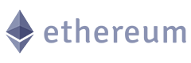
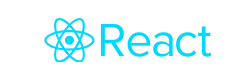

Document
SignBridge – AI-Powered Sinhala Sign Language Assistive Technology Platform
Bridging communication barriers for deaf and mute children in Sri Lanka through cutting-edge artificial intelligence, deep learning, and inclusive design.
Project Scope
Literature Survey
Sri Lanka is home to approximately 8,500 deaf and mute children enrolled in special education units, where the student-to-educator ratio exceeds 50:1 and literacy rates remain below 30% [1]. Existing assistive technology tools are predominantly English-centric and fail to accommodate the grammatical structure of Sinhala Sign Language (SSL), which follows a Subject-Object-Verb (SOV) word order distinct from standard English syntax [2][3].
Prior research in sign language recognition has explored deep learning approaches including two-stream Convolutional Neural Networks (CNN) [4], Transformer-based attention mechanisms [5][6], and hybrid CNN-BiLSTM architectures [7]. Landmark detection frameworks such as MediaPipe Hands [8] and large-scale datasets including How2Sign [9] have enabled real-time recognition pipelines. In the Sri Lankan context, Hettiarachchi and Meegama [11] and Haputhanthri et al. [2] applied machine learning to SSL recognition; however, integrated, child-friendly platforms addressing all modalities of communication remain absent.
Text-to-sign animation research has advanced with 3D avatar systems [12], yet no Sinhala-specific text-to-SSL animation system existed prior to this work. Gamification research by Deterding et al. [15] demonstrates that adaptive difficulty, immediate feedback, and progress tracking drive learner engagement — principles particularly critical for visual learners such as deaf children. Visual speech recognition through lip-reading using CNN-LSTM architectures [17][18] has shown strong performance for high-resource languages, but Sinhala remained without such a pronunciation support tool [19].
Selected References
- R. Weerasinghe, K. Perera, and D. Gamage, "Challenges in deaf education in Sri Lanka," J. Special Education in South Asia, vol. 15, no. 2, pp. 45–62, 2020.
- D. Haputhanthri, G. Hettiarachchi, and C. Meegama, "Multimodal deep learning for Sinhala Sign Language recognition," IEEE Int. Conf. Industrial Information Systems, pp. 123–128, 2019.
- K. Jayasekara and S. Ratnayake, "Palmingo: A mobile application for Sinhala Sign Language learning," Sri Lankan J. Computer Science, vol. 8, no. 1, pp. 33–47, 2021.
- K. Simonyan and A. Zisserman, "Two-stream convolutional networks for action recognition in videos," NeurIPS, pp. 568–576, 2014.
- A. Vaswani et al., "Attention is all you need," NeurIPS, pp. 5998–6008, 2017.
Deaf Children in Sri Lanka
SSL Sign Classes Recognized
AI Modules Integrated
% Gamified Learning Accuracy
Research Gap
A comprehensive review of existing literature and assistive tools identifies the following critical gaps in serving the deaf and mute community in Sri Lanka.
Absence of Sinhala-Specific Sign Language Tools
Existing sign language recognition systems and learning platforms are predominantly designed for high-resource languages such as American Sign Language (ASL) or British Sign Language (BSL). No integrated, production-ready platform supports the grammatical structure and vocabulary of Sinhala Sign Language (SSL), which follows a distinct Subject-Object-Verb (SOV) word order incompatible with English-centric tools.
Lack of an Integrated Multi-Modal Learning Platform
While individual components such as gesture recognition, text-to-sign animation, and gamified vocabulary tools have been explored in isolation, no unified platform exists that combines all these modalities in a coherent learning loop. The absence of such integration creates fragmented user experiences that hinder effective language acquisition for deaf children in Sri Lanka.
Insufficient Pronunciation Support for Deaf Learners
Lip-reading and pronunciation feedback tools based on visual speech recognition are largely unavailable for Sinhala, a low-resource language. The absence of a Sinhala lip-reading dataset and trained models means that deaf learners have no AI-assisted mechanism to practice and receive feedback on Sinhala pronunciation, an essential component for language integration in educational settings.
Limited Child-Centric and Adaptive Learning Designs
Most available platforms are designed for adult users or general audiences and do not incorporate child-centric pedagogical approaches such as adaptive difficulty progression, spaced repetition, and immediate visual feedback. This gap is particularly acute for deaf children aged 5–12 in Sri Lanka's special education system, who require tailored, visually rich, and gamified interfaces to support their unique learning modalities.
Research Solutions
The proposed SignBridge platform addresses each identified research gap through four tightly integrated AI-powered modules.
SSL-to-Text Recognition System
Implementing a hybrid CNN and BiLSTM deep learning model with an attention mechanism to accurately recognize spatial and temporal features of sign language gestures and translate them into text.
Text-to-SSL Avatar Animation System
This decoupled architecture features an NLP pipeline achieving 28.13 milliseconds and video concatenation in exactly 192 milliseconds, seamlessly translating complex Sinhala text into highly accurate visual sign language animation sequences.
Gamified Sinhala Sign Language Vocabulary Learning
Developing an engaging platform featuring word puzzles and sentence ordering games that use WordLSTM embeddings to adaptively scale difficulty based on the learner's progress.
AI-Powered Lip Reading Pronunciation Assistant
Deploying a CNN-LSTM visual speech recognition model that tracks facial landmarks to provide real-time, corrective feedback on Sinhala word pronunciation.
Research Objectives
Clear and Targeted Objectives for Inclusive AI-Assisted Education
Real-Time Sign Language Recognition
To develop and evaluate a high-accuracy real-time Sinhala Sign Language recognition system using hybrid CNN-BiLSTM deep learning architecture, capable of classifying a minimum of 185 SSL sign classes from webcam video input in a browser-to-server deployment environment.
Sinhala Text-to-Sign Language Animation
To design and implement a text-to-SSL animation system that accurately translates Sinhala text into grammatically correct SSL sequences using a video-based approach, incorporating TSOV spatial grammar conversion, a digital SSL dictionary, and Word2Vec semantic embeddings for out-of-vocabulary words.
Gamified Adaptive Vocabulary Learning
To build an adaptive, gamified SSL vocabulary learning platform incorporating spaced repetition, difficulty progression, and immediate visual feedback through two interactive games — a word puzzle and a sentence ordering game — validated with deaf learners in special education settings in Sri Lanka.
AI-Assisted Lip Reading Pronunciation Support
To develop a visual speech recognition system using a CNN-LSTM model trained on a custom Sinhala lip-reading dataset that provides real-time, camera-independent pronunciation feedback to deaf and mute learners practicing Sinhala phonemes and words through a web browser interface.
SignBridge
AI-Powered Sinhala Sign Language Assistive Technology Platform
SignBridge is a comprehensive, multi-component AI-assisted platform designed to support communication and Sinhala language learning for deaf and mute children in Sri Lanka. The system integrates four primary modules:
- SSL-to-Text Recognition System (Sign → Text)
- Text-to-SSL Animation System (Text → Sign)
- Gamified Sinhala Sign Language Vocabulary Learning Platform
- AI-Powered Lip Reading Pronunciation Assistant
The four modules operate as an integrated learning loop in which vocabulary from the Gamified Learning System feeds into the Text-to-SSL Avatar for demonstration, while the SSL-to-Text Recognition and Lip Reading Assistant provide real-time assessment of both signing and articulation skills. This unified architecture enables a complete communication cycle: deaf children learn vocabulary through games, practice signing and pronunciation using the camera, and receive immediate cross-modal feedback. The system is built on a Python backend (Flask/FastAPI), React frontend, and employs PyTorch, MediaPipe, OpenCV, WebGL, and Three.js across its modules. All components are accessible through a standard web browser, requiring no additional hardware or software installation.
Methodology
The SSL-to-Text Recognition System captures webcam video frames and extracts 132 hand and body landmark features per frame using MediaPipe, forming fixed-length 50-frame sequences. These sequences are classified using a hybrid CNN-BiLSTM model with an attention mechanism, trained on 2,791 sequences across 185 sign classes. Prediction stability is improved through ensemble inference and confidence smoothing (α = 0.35), achieving 88.85% top-1 and 94.84% top-5 accuracy on unseen validation data.
The Text-to-SSL Avatar system accepts Sinhala or English text, applies NLP normalization and SOV grammar conversion using the Sinling tokenizer and a custom grammar engine, then maps tokens to SSL gestures via a digital sign dictionary with fingerspelling for out-of-vocabulary words. A Seq2Seq Transformer model (sub-word tokenized via SentencePiece) handles complex sentence translation, and the resulting gesture sequence is rendered in real time by a WebGL/Three.js 3D avatar.
The Gamified Vocabulary Learning platform includes a Word Puzzle Game and a Sentence Ordering Game. A BiLSTM-Attention word embedding model classifies vocabulary into four difficulty tiers (Basic, Easy, Medium, Hard) based on syllable count and vowel sign complexity. A Transformer-based sentence ordering model achieves 99% accuracy in arranging jumbled Sinhala words into grammatically correct SOV structures. The Lip Reading Pronunciation Assistant uses normalized lip landmark coordinates (relative to inter-ocular and nose-length references) as input to a CNN-LSTM model, providing real-time pronunciation feedback through the browser camera.
Tools & Technologies
State-of-the-Art AI, Computer Vision & Web Technologies
AI / Machine Learning
Computer Vision & NLP

Frontend, 3D Graphics & Backend

Milestones
Research Timeline & Key Deliverables
September 2025
Project Proposal
Formal research proposal outlining the AI-Powered Sinhala Sign Language Assistive Technology Platform, problem statement, objectives, and preliminary literature survey submitted for institutional review.
Marks Allocated : 6
January 2026
Progress Presentation I
Demonstration of 50% system completion, including the SSL-to-Text Recognition prototype and initial dataset collection. Review of design decisions, model architecture, and preliminary accuracy results.
Marks Allocated : 6
May 2026
Research Paper
Peer-reviewed research paper documenting system architecture, experimental results across all four modules (SSL recognition, 3D avatar, gamified learning, lip reading), and contributions to the field of assistive AI for deaf education in Sri Lanka.
Marks Allocated : 10
march 2026
Progress Presentation II
90% system completion demonstration including integrated multi-module platform, gamified learning pilot study results with deaf students in special education settings, and poster presentation summarizing the project's societal impact.
Marks Allocated : 18
June 2026
Research Logbook
Validation of individual research contributions through the logbook, including status documents, experiment logs, dataset documentation, and module-level evaluation records.
Marks Allocated : 3
April 2026
Final Presentation & Viva
Final system demonstration and individual viva assessing each team member's research contribution, technical implementation, and understanding of the AI-powered Sinhala Sign Language platform.
Marks Allocated : 20
Downloads
Access Research Documents, Presentations & Reports
Document
Project Charter
Document
Project Proposal
Presentation
Project Proposal PPT
Presentation
Progress Presentation I
Document
Status Documents I
Presentation
Progress Presentation II
Document
Status Documents II
Document
Research Paper
Document
Final Report
Team
The Research Group Behind SignBridge

Mrs Sadeepa Kuruppu
Supervisor – SLIIT
Ms Tharushi Rubasinghe
Co-Supervisor – SLIITAmantha S.A.S. – IT22133618
Group Leader – SSL-to-Text RecognitionVitharana K.V.C.D – IT22091352
Group Member – Text-to-SSL AvatarWitharana D.H. – IT22135384
Group Member – Gamified LearningWithanage E.D – IT22239952
Group Member – Lip Reading Assistant
SignBridge
Empowering 8,500 deaf and mute children in Sri Lanka through AI-powered Sinhala Sign Language recognition, 3D avatar animation, gamified vocabulary learning, and real-time lip-reading pronunciation assistance. Building a more inclusive future through technology.
Back to TopContact Us
Address
SLIIT Malabe Campus
New Kandy Rd, Malabe,
Sri Lanka
Email Us
signbridge.sliit@gmail.com